Pomocnik do medytacji napisany w natywnym C++. Plan rosnących sesji prowadzi Cię od 5 do 30 minut (drabinka 5, 7, 10, 12, 15, 20, 25, 30 min — po trzech sesjach na kroku idziesz wyżej). Ustaw czas sesji i dzwonek na koniec, prowadź oddech według wybranego wzorca (4-4, 4-7-8, kwadrat, własne rytmy), zapisuj sesje z nastrojem przed i po oraz myślami — tymi wpisanymi albo podyktowanymi mową — i śledź passę dni, łączny czas i liczbę sesji. Cała logika działa lokalnie, bez konta i bez reklam; dane trzymane są w jednym pliku JSON, a aplikacja nie łączy się z siecią. Jedyny wyjątek to dyktowanie: domyślnie rozpoznaje mowę na urządzeniu (głos nie opuszcza telefonu), a gdy telefon tego nie potrafi, po wyraźnej zgodzie używa usługi systemowej — wtedy pod polem widać ostrzeżenie o trybie online. Aplikacja nie zapisuje nagrań; do dziennika trafia tylko rozpoznany tekst. Interfejs po polsku i angielsku.A meditation helper written in native C++. A growing-session plan takes you from 5 to 30 minutes (a ladder of 5, 7, 10, 12, 15, 20, 25 and 30 min — three sessions at a step and you move up). Set a session length and an end bell, follow guided breathing with a chosen pattern (4-4, 4-7-8, box, or your own rhythms), log sessions with mood before and after plus your thoughts — typed or dictated — and track your day streak, total time, and session count. All logic runs locally, with no account and no ads; data is stored in a single JSON file and the app does not connect to the network. The one exception is dictation: by default speech is recognized on device (your voice never leaves the phone); if the phone cannot do that, the app uses the system service only after your explicit consent, and shows an online-mode warning under the field. The app stores no recordings — only the recognized text reaches the journal. Polish and English UI.
Instalacja: pobierz plik i otwórz go na telefonie; Android zapyta o zgodę na instalację spoza sklepu. Starsze wersje i changelog: wydanie na GitHubie.Install: download the file and open it on the phone; Android will ask to allow installs from outside the store. Older versions and changelog: release on GitHub.
Zrzuty ekranuScreenshots
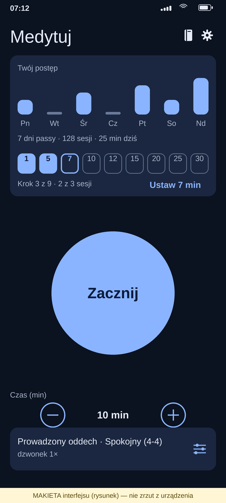
Strona główna: słupki, liczby, drabinka planu i okrągłe „Zacznij” (makieta)Main screen: bars, the numbers, the plan ladder and a round „Start” (mockup)
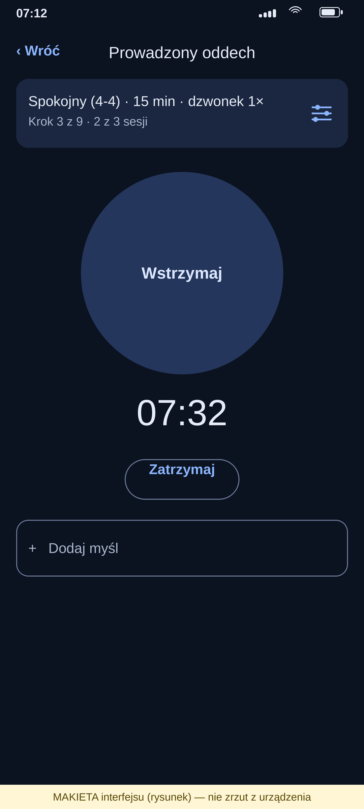
Sesja prowadzona: koło z fazami oddechu, zegar i „Zatrzymaj” (makieta)Guided session: the breathing circle, the timer and „Stop” (mockup)
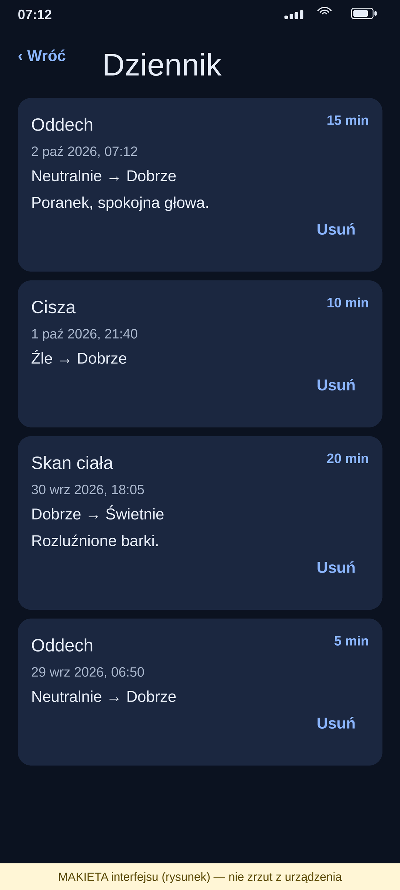
Dziennik sesji: nastrój przed i po, notatki (makieta)Session journal: mood before and after, notes (mockup)
Wzorce: własne rytmy obok wbudowanych (makieta)Patterns: your own rhythms next to built-in ones (mockup)
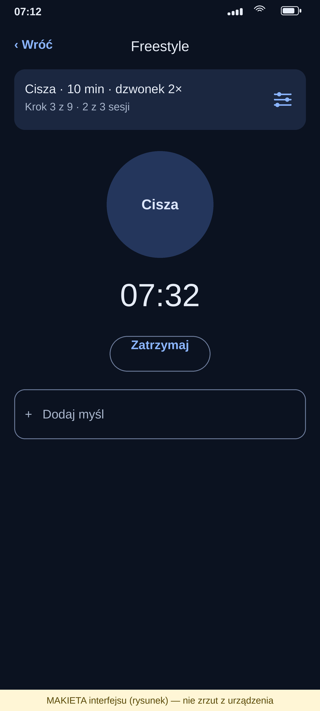
Sesja freestyle: bez prowadzenia oddechu, tylko zegar i aureola (makieta)Freestyle session: no breathing guidance, just the timer and a halo (mockup)
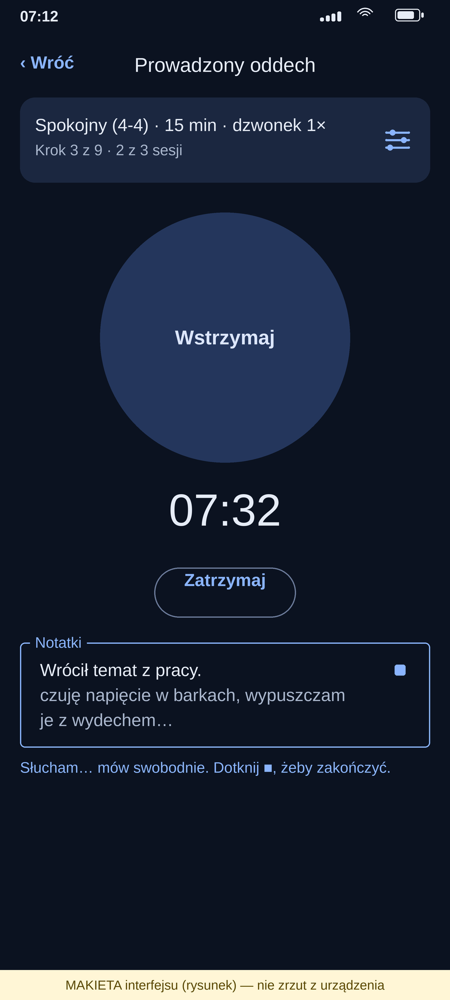
Myśli dyktowane mową w trakcie sesji (makieta)Thoughts dictated during a session (mockup)
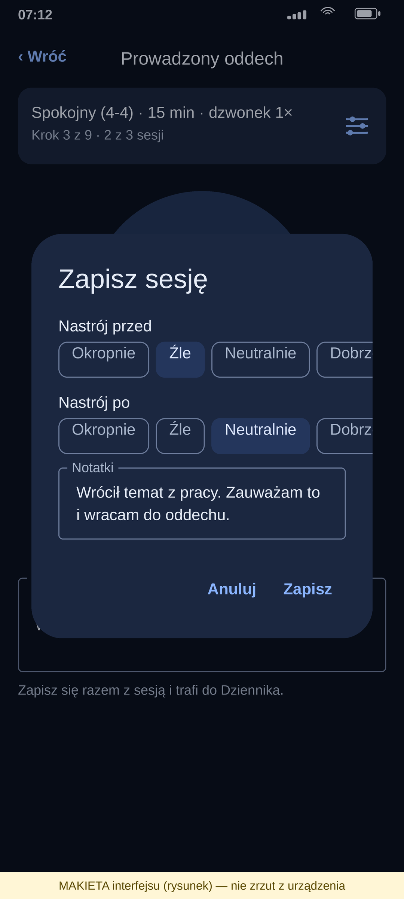
Zapis sesji: myśli z sesji i nastroje przed/po (makieta)Saving a session: thoughts from the session plus moods (mockup)
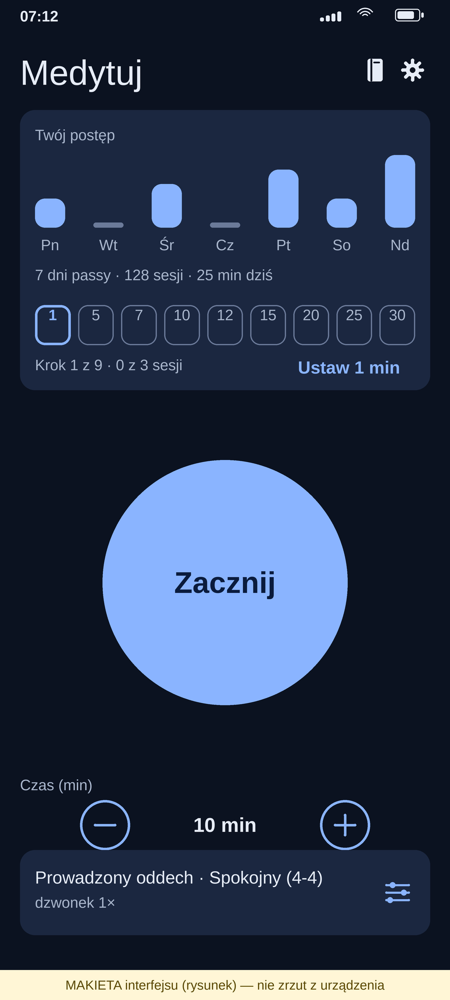
Plan rosnących sesji: początek drabinki — krok 1, dziś 5 min (makieta)Growing-session plan: the start of the ladder — step 1, today 5 min (mockup)
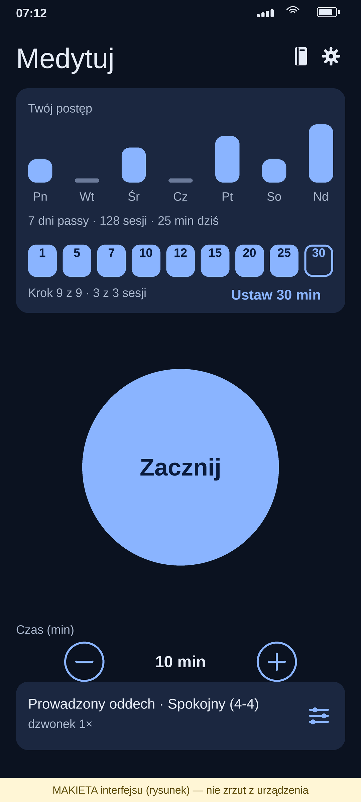
Plan ukończony: cała drabinka zaliczona, 30 min (makieta)Plan completed: the whole ladder done, 30 min (mockup)
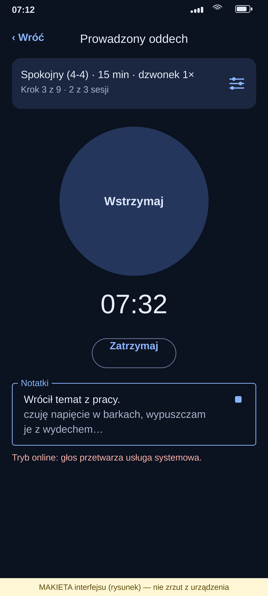
Dyktowanie online: ostrzeżenie, że głos przetwarza usługa systemowa (makieta)Online dictation: a warning that the system service processes your voice (mockup)
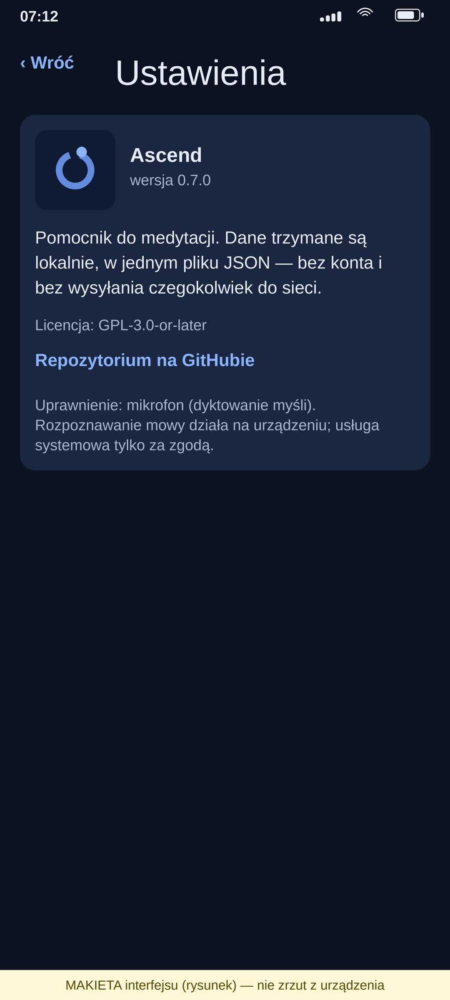
Ustawienia: wersja, licencja i prywatność — dane zostają na telefonie (makieta)Settings: version, license and privacy — your data stays on the phone (mockup)
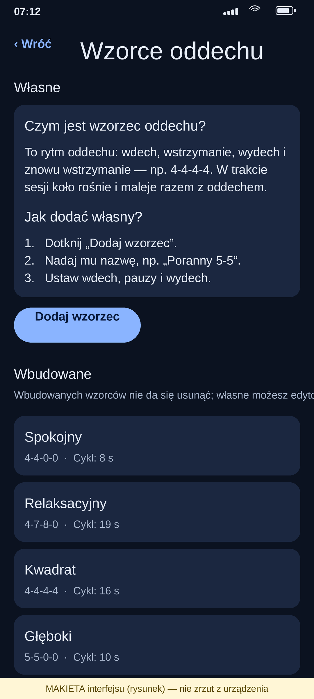
Puste „Wzorce”: czym jest wzorzec oddechu i jak dodać własny (makieta)Empty „Patterns”: what a breathing pattern is and how to add your own (mockup)
Historia wersjiVersion history
0.11.0
Czas sesji ustawia się licznikiem: pod okrągłym „Zacznij” są przyciski [−] i [+], a między nimi długość sesji. Do 10 minut licznik idzie po minucie, wyżej po pięć (do 120), a zejście z minuty daje „Bez limitu”. Ten sam licznik jest w arkuszu ustawień sesji, więc nie ma już rzędu chipów z czasem.
Session length is set with a counter: [−] and [+] buttons sit under the round „Start”, with the length between them. Up to 10 minutes it steps by one, then by five (up to 120), and going below one minute gives „No limit”. The same counter is in the session settings sheet, so the row of time chips is gone.
0.10.1
Większe koło „Zacznij”: 196 dp zamiast 148 dp, z większym napisem. Po usunięciu dolnej belki (0.10.0) zrobiło się na to miejsce, a okrąg jest teraz głównym elementem ekranu — reszta nadal mieści się bez przewijania.
A bigger „Start” circle: 196 dp instead of 148 dp, with a larger label. Removing the bottom bar in 0.10.0 freed the room, and the circle is now the main element of the screen — everything else still fits without scrolling.
0.10.0
Nawigacja przeniosła się do paska górnego: Dziennik i Ustawienia to dwie ikony w prawym górnym rogu, a dolna belka zniknęła — ekran Medytuj zyskał spokój i przestrzeń. Zakładki „Wzorce” nie ma: do własnych rytmów wchodzi się z arkusza ustawień sesji przyciskiem „Zarządzaj wzorcami”. Ekrany potomne mają „‹ Wróć”.
Navigation moved into the top bar: Journal and Settings are two icons in the top right corner, and the bottom bar is gone — the Meditate screen gained calm and room. The „Patterns” tab is gone too: your own rhythms live behind the „Manage patterns” button in the session settings sheet. Sub-screens have a „‹ Back”.
0.9.0
Plan rosnących sesji startuje od minuty: drabinka to teraz 1, 5, 7, 10, 12, 15, 20, 25 i 30 minut (dziewięć kroków), więc pierwsza sesja może trwać minutę. Pod okrągłym „Zacznij” doszedł wiersz „Czas (min)” — długość sesji ustawiasz bez otwierania arkusza.
The growing-session plan now starts at one minute: the ladder is 1, 5, 7, 10, 12, 15, 20, 25 and 30 minutes (nine steps), so your first session can be a single minute. A „Time (min)” row under the round „Start” button sets the length without opening the sheet.
0.8.0
Strona główna to teraz postęp i jeden przycisk: słupki ostatnich siedmiu dni, liczby (passa, sesje, minuty dziś) i drabinka planu, a pod nimi okrągłe „Zacznij”. Wzorzec, tryb, technika, czas i dzwonek przeniosły się do arkusza „Ustawienia sesji” — otwiera go wiersz pod przyciskiem. Ekran prowadzonej sesji i freestyle są lżejsze, a puste „Wzorce” tłumaczą, po co są i jak dodać własny rytm.
The main screen is now your progress plus one button: bars for the last seven days, the numbers (streak, sessions, minutes today) and the plan ladder, with a round „Start” underneath. Pattern, mode, technique, length and bell moved into the „Session settings” sheet, opened from the row under the button. The guided and freestyle sessions are leaner, and empty „Patterns” explains what they are and how to add your own rhythm.
0.7.0
Nowy wygląd: ciemnoniebieski motyw jako jedyny (granatowe tło, stonowane karty, błękitny akcent) i nowe logo — trzy wznoszące się szewrony, czyli plan rosnących sesji. Doszedł ekran Ustawienia z informacjami o aplikacji: wersja, licencja i to, co dzieje się z danymi.
A new look: the dark blue theme is now the only one (navy background, muted cards, light blue accent) and a new logo — three rising chevrons, i.e. the growing-session plan. A new Settings screen shows the version, the license and what happens to your data.
0.6.0
Plan rosnących sesji: drabinka 5, 7, 10, 12, 15, 20, 25 i 30 minut — po trzech sesjach na kroku idziesz wyżej. Karta planu na ekranie Medytuj ustawia dzisiejszą długość jednym dotknięciem, a Statystyki pokazują całą drabinkę i postęp. Krok liczy się z zapisanych sesji, więc działa też wstecz.
A growing-session plan: a ladder of 5, 7, 10, 12, 15, 20, 25 and 30 minutes — three sessions at a step and you move up. A plan card on the Meditate screen sets today's length in one tap, and Stats show the whole ladder with your progress. The step is derived from saved sessions, so it also works retroactively.
0.5.0
Myśli przy medytacji: notatka do dziennika pod przyciskiem Start/Zatrzymaj, pisana albo dyktowana mową. Dyktowanie domyślnie rozpoznaje mowę na urządzeniu (offline), a gdy telefon tego nie potrafi — po zgodzie użytkownika używa usługi systemowej i pokazuje ostrzeżenie o trybie online. Tekst z ekranu medytacji trafia gotowy do okna zapisu sesji.
Thoughts while you meditate: a journal note right under the Start/Stop button, typed or dictated. Dictation uses on-device recognition (offline) by default; if the phone cannot do that, it uses the system service after your consent and shows an online-mode warning. The text from the meditate screen lands ready in the session save dialog.
0.4.0
Dzwonek na koniec sesji (1–3 uderzenia, do posłuchania przy wyborze) oraz tryb freestyle — medytacja bez prowadzenia oddechu, tylko zegar i dzwonek. Też w wersji 0.3.0: własne wzorce oddechu.
An end-of-session bell (1–3 strikes, previewed while you pick) and a freestyle mode — meditation without breathing guidance, just the timer and the bell. Also in 0.3.0: your own breathing patterns.
0.3.0
Własne wzorce oddechu: nowy ekran „Wzorce” — dodawanie, edycja i usuwanie własnych rytmów (np. wolny 6-8), obok pięciu wbudowanych.
Your own breathing patterns: a new „Patterns” screen to add, edit and delete custom rhythms (e.g. slow 6-8) next to five built-in ones.